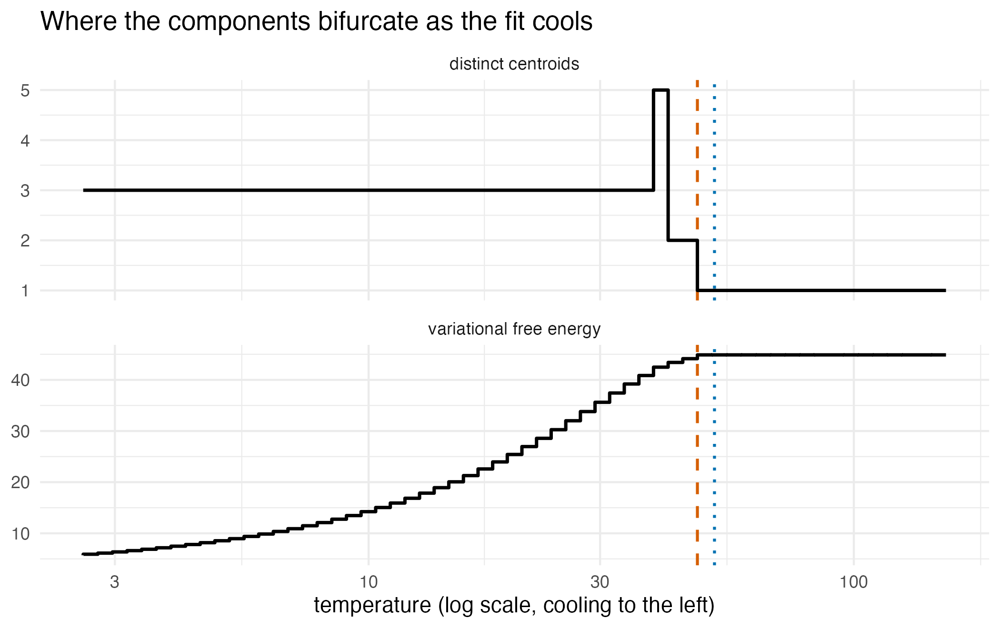

has_ggplot2 <- requireNamespace("ggplot2", quietly = TRUE)The problem
An analyst has a fitted mixture on the screen and three questions that the parameter list does not answer on its own: how spread out is this mixture, how far is it from the other fit I ran yesterday, and how many components does my data actually support? All three are entropy questions, and on a Gaussian mixture most of them have closed-form answers. This vignette walks the entropy surface of a fitted mixture: what is exact, what is estimated, and what each quantity is safe to conclude.
Package capabilities
Eight functions carry the vignette. gmm_entropy()
returns the order-2 Rényi entropy of a mixture in closed form by
default, and a Monte Carlo Shannon estimate with its standard error and
an analytic upper bound under order = "shannon".
gmm_divergence() returns the symmetric Cauchy-Schwarz
divergence between two mixtures in closed form. Under
type = "kl" it returns a Monte Carlo estimate of the
Kullback-Leibler divergence
,
with
the first mixture and
the second.
gmm_mutual_information() measures dependence between two
coordinate blocks of a fitted joint as the Cauchy-Schwarz divergence
between the joint and the product of its marginals, and
gmm_conditional_entropy() returns the predictive
uncertainty of the target coordinates given the conditioned ones, row by
row, as a Rényi-2 entropy.
gmm_anneal_path() cools a deterministic-annealing
schedule (Rose, 1998) and records where the components bifurcate, which
gives both a warm start for a fit and a component count.
bic_aic() reports the integrated completed likelihood
beside the usual criteria, and gmm_independence_graph()
reads the second-order conditional-independence structure of a fitted
mixture. maxent_target() runs the argument the other way,
from a set of constraints to the least-committal density consistent with
them (Jaynes, 1957).
Addressing the problem
set.seed(20260618)The closed-form spine
The integral of a product of two Gaussian densities is itself a Gaussian density evaluation: writing for a Gaussian density, the integral over of equals . Any quantity that is quadratic in a mixture – the integral of , or of – is therefore a finite sum of such evaluations, and closed-form. Shannon entropy carries the logarithm of a sum and has no such closed form, so it is estimated by Monte Carlo.
Rényi-2 entropy against its analytic value
gmm_entropy() returns the closed-form order-2 Rényi
entropy by default. For a single Gaussian the value is exact and matches
the analytic form
in
dimensions, which is an independent check on the implementation.
g <- gmm(
weights = c(0.5, 0.5),
means = list(c(-2, 0), c(2, 0)),
covariances = list(diag(2), diag(2))
)
h2_mixture <- gmm_entropy(g)
sigma_one <- matrix(c(1, 0.3, 0.3, 1), 2L, 2L)
one <- gmm(weights = 1, means = list(c(0, 0)),
covariances = list(sigma_one))
h2_closed <- gmm_entropy(one)
h2_analytic <- 0.5 * (2 * log(4 * pi) +
as.numeric(determinant(sigma_one, logarithm = TRUE)$modulus))
h2_gap <- abs(h2_closed - h2_analytic)| Quantity | Rényi-2 entropy (nats) |
|---|---|
| two-component mixture, closed form | 3.206021 |
| single Gaussian, closed form | 2.483869 |
| single Gaussian, analytic formula | 2.483869 |
Shannon entropy, bracketed from above
Shannon entropy is returned as a Monte Carlo estimate with its standard error and an analytic upper bound.
sh <- gmm_entropy(g, order = "shannon", n_mc = 5000L, seed = 1L)
sh_slack <- sh$upper_bound - sh$mc
sh_slack_se <- sh_slack / sh$mc_se| Quantity | Value |
|---|---|
| Monte Carlo estimate | 3.4779 |
| Monte Carlo standard error | 0.0134 |
| analytic upper bound | 3.5310 |
| draws | 5000 |
Cauchy-Schwarz divergence, and the Kullback-Leibler alternative
gmm_divergence() returns the closed-form, symmetric
Cauchy-Schwarz divergence by default. It is non-negative and zero
exactly when the two mixtures are equal. When the asymmetric
Kullback-Leibler divergence is wanted instead, type = "kl"
delegates to the package’s Monte Carlo estimator
gmm_kld().
q <- gmm(
weights = 1, means = list(c(0, 0)), covariances = list(diag(2) * 2)
)
d_cs <- gmm_divergence(g, q)
d_self <- gmm_divergence(g, g)
# takes no seed argument: the draws come from the stream set.seed() started
d_kl <- gmm_divergence(g, q, type = "kl", n_mc = 2000L)
d_kl_gap <- d_kl$mc - d_kl$variational| Quantity | Value (nats) |
|---|---|
| Cauchy-Schwarz, g against q | 0.3881 |
| Cauchy-Schwarz, g against itself | 0.0000 |
| Kullback-Leibler, Monte Carlo | 0.5703 |
| Kullback-Leibler, Monte Carlo SE | 0.0218 |
| Kullback-Leibler, Hershey and Olsen approximation | 0.5003 |
Mutual information and predictive entropy
Two further reads come from the same closed-form spine. Mutual
information is non-negative and zero exactly when the blocks are
independent; conditional entropy is the order-2 Rényi entropy of the
conditional mixture gmm_conditionalise() returns, evaluated
row by row, with NA marking the target coordinate.
sigma_joint <- matrix(c(1, 0.7, 0.7, 1), 2L, 2L)
joint <- gmm(
weights = 1, means = list(c(0, 0)), covariances = list(sigma_joint)
)
mi <- gmm_mutual_information(joint, 1L, 2L)
sigma_free <- diag(2)
independent <- gmm(
weights = 1, means = list(c(0, 0)), covariances = list(sigma_free)
)
mi_independent <- gmm_mutual_information(independent, 1L, 2L)
given_grid <- rbind(c(NA, 0), c(NA, 1), c(NA, 2))
h_cond <- gmm_conditional_entropy(joint, given = given_grid)| Quantity | Value (nats) |
|---|---|
| Cauchy-Schwarz mutual information, correlation 0.7 | 0.102997 |
| Cauchy-Schwarz mutual information, independent block | 0.000000 |
| Rényi-2 conditional entropy at | 0.928840 |
| Rényi-2 conditional entropy at | 0.928840 |
| Rényi-2 conditional entropy at | 0.928840 |
Cooling the fit: annealing and phase transitions
The same statistical-mechanics framing – the fitting objective is a
variational free energy
– gives an annealed fit. Softening the E-step responsibilities by a
temperature
,
so that
,
and cooling
from a high value toward one, turns the fit into a homotopy: at high
the objective has a single smooth basin, and as
falls the components bifurcate at critical temperatures. Setting
anneal = TRUE on fit_em_samples() or
fit_kld_em() uses this annealed path as a warm start for
the unchanged cold EM loop.
x_three <- rbind(
matrix(rnorm(200L), ncol = 2L) +
matrix(rep(c(-7, -7), each = 100L), ncol = 2L),
matrix(rnorm(200L), ncol = 2L) +
matrix(rep(c(7, -7), each = 100L), ncol = 2L),
matrix(rnorm(200L), ncol = 2L) +
matrix(rep(c(0, 8), each = 100L), ncol = 2L)
)
tgt_three <- gmm_target_from_samples(x_three)
fit_annealed <- fit_em_samples(tgt_three, N = 3L, anneal = TRUE, seed = 1L)
fit_annealed@diagnostics$annealed
#> [1] TRUECooling also discovers the component count.
gmm_anneal_path() tracks the number of distinct centroids
as the temperature falls. The discovered number of components is the
count that spans the widest range of log temperature, summed over the
steps at which it is recorded; on the geometric cooling schedule this is
the count recorded at the most steps. The first bifurcation has the
closed-form critical temperature
,
returned as t_critical_analytic for an independent check.
Here
is the covariance of the data and
the covariance shared by the annealed components. The default
makes
the largest eigenvalue of
.
path <- gmm_anneal_path(x_three, k_max = 6L, n_steps = 60L, seed = 1L)
k_found <- path$k_selected
t_empirical <- path$first_critical_temperature
t_analytic <- path$t_critical_analytic
t_ratio <- t_empirical / t_analytic| Quantity | Value |
|---|---|
| components discovered | 3 |
| first critical temperature, empirical | 47.60 |
| first critical temperature, analytic | 51.62 |
| ratio empirical to analytic | 0.922 |
| cooling steps recorded | 60 |
The table gives two numbers where the cooling gives a whole curve. The figure below is the curve: the number of distinct centroids against temperature on the upper panel, the free energy on the lower, with the empirical and analytic first critical temperatures marked. The free energy recorded at each temperature is , with the shared above. It equals , where is averaged over the soft assignments , and is the entropy of the assignments relative to the component weights, zero when every point is assigned in proportion to the weights.
anneal_df <- rbind(
data.frame(
temperature = path$path$temperature,
value = path$path$n_effective,
panel = "distinct centroids"
),
data.frame(
temperature = path$path$temperature,
value = path$path$free_energy,
panel = "variational free energy"
)
)
ggplot2::ggplot(anneal_df, ggplot2::aes(temperature, value)) +
ggplot2::geom_vline(
xintercept = t_analytic, linetype = "dotted",
colour = "#0072B2", linewidth = 0.7
) +
ggplot2::geom_vline(
xintercept = t_empirical, linetype = "dashed",
colour = "#D55E00", linewidth = 0.7
) +
# a count recorded at one temperature holds until the next, cooler step
ggplot2::geom_step(direction = "vh", linewidth = 0.8,
colour = "#000000") +
ggplot2::facet_wrap(~ panel, ncol = 1L, scales = "free_y") +
ggplot2::scale_x_log10() +
ggplot2::labs(
x = "temperature (log scale, cooling to the left)",
y = NULL,
title = "Where the components bifurcate as the fit cools"
) +
ggplot2::theme_minimal(base_size = 11)
Deterministic annealing on three well-separated clusters. The upper panel is the staircase of distinct centroids as the temperature falls, the lower panel the deterministic-annealing free energy defined in the text, over the same schedule. The dashed rule is the empirical first critical temperature, where the count first rises above one, and the dotted rule the closed-form analytic one.
Maximum-entropy targets
Entropy also points the other way – from a set of constraints to the
least-committal density consistent with them.
maxent_target() builds that maximum-entropy density: the
Gaussian under first- and second-moment constraints on the full space,
the uniform under a support constraint alone, and a truncated Gaussian
under second moments on a box. The bounded cases declare their support,
so regime (iii) fits them under an automatically selected
support-matched proposal.
me_gauss <- maxent_target(moments = list(mean = c(0, 0), cov = diag(2)))
me_unif <- maxent_target(support = list(lower = c(0, 0), upper = c(1, 1)))
unif_density <- exp(me_unif@log_density(matrix(c(0.5, 0.5), nrow = 1L)))
gauss_density <- exp(me_gauss@log_density(matrix(c(0, 0), nrow = 1L)))| Constraint supplied | Maximum-entropy family | Density at the centre |
|---|---|---|
| mean and covariance | maxent_gaussian | 0.159155 |
| unit-square support | maxent_uniform | 1.000000 |
Selecting a component count with the ICL
bic_aic() reports the integrated completed likelihood
(Biernacki et al., 2000) alongside the BIC and AIC. The ICL adds to the
BIC twice the entropy of the fitted classification,
with
,
so it penalises mixtures whose components overlap and favours
well-separated solutions. It equals the BIC for a single component and
is never smaller.
x_two <- rbind(
matrix(rnorm(200L, -4), ncol = 2L),
matrix(rnorm(200L, 4), ncol = 2L)
)
fit_two <- fit_em_samples(gmm_target_from_samples(x_two), N = 2L)
crit <- bic_aic(fit_two)
icl_gap <- crit$icl - crit$bic| Criterion | Value |
|---|---|
| BIC | 1492.24 |
| AIC | 1455.95 |
| ICL | 1492.24 |
| classification entropy | |
| free parameters | 11 |
Dependency structure of a mixture
gmm_independence_graph() reads the partial-correlation
(Gaussian graphical model) structure of the overall covariance of a
fitted mixture. For a mixture fitted to data, it tests the partial
correlation of coordinates
and
,
given all the others, with Fisher’s
at level 0.05, taking the sample size from the fit. The two mixtures in
this section have no sample size, so they are read with
threshold = 0.05, which draws an edge
when that partial correlation exceeds 0.05 in absolute value. The
overall covariance of a mixture is closed-form in its parameters, so no
sampling is needed. A tridiagonal precision matrix is a chain, and the
recovered graph should be that chain.
omega <- diag(4L)
for (i1 in seq_len(3L)) {
omega[i1, i1 + 1L] <- -0.5
omega[i1 + 1L, i1] <- -0.5
} # ends i1, over the off-diagonal band of the chain precision
g_chain <- gmm(
weights = 1, means = list(rep(0, 4L)), covariances = list(solve(omega))
)
adj_chain <- gmm_independence_graph(g_chain, threshold = 0.05)
edges_chain <- sum(adj_chain) / 2L| x1 | x2 | x3 | x4 | |
|---|---|---|---|---|
| x1 | 0 | 1 | 0 | 0 |
| x2 | 1 | 0 | 1 | 0 |
| x3 | 0 | 1 | 0 | 1 |
| x4 | 0 | 0 | 1 | 0 |
The distinctive use is regime (iii) of van der Hoek and Elliott
(2024). Composed with fit_kld_em(), the diagnostic can
recover the dependency structure of a target you can only
evaluate – an unnormalised energy density – where no sample
exists to drive a conventional structure estimator. Whether it does
depends on the quality of the fit, which the example below shows. The
energy of the continuous field below couples
with
and
with
and has no term in
,
so
and
are conditionally independent given
.
energy <- function(x_mat) {
x_mat <- matrix(x_mat, ncol = 3L)
rowSums((x_mat^2 - 1)^2) -
0.7 * (x_mat[, 1L] * x_mat[, 2L] + x_mat[, 2L] * x_mat[, 3L])
}
field <- gmm_target(n_dim = 3L,
log_density = function(x_mat) -energy(x_mat))
fit_field <- fit_kld_em(
field,
N = 8L,
proposal = proposal_uniform(3L, -3, 3),
is_size = 6000L,
anneal = TRUE,
seed = 1L,
support_warn = FALSE
)
adj_field <- gmm_independence_graph(fit_field, threshold = 0.05)
edges_field <- sum(adj_field) / 2L
round(attr(adj_field, "pcor"), 3L)
#> x1 x2 x3
#> x1 1.000 0.517 0.069
#> x2 0.517 1.000 0.440
#> x3 0.069 0.440 1.000Conditional independence does not force a zero partial correlation in general, so the target’s own partial correlations are computed by quadrature on a grid over .
g_axis <- seq(-3, 3, length.out = 61L)
g_pts <- as.matrix(expand.grid(g_axis, g_axis, g_axis))
g_w <- exp(-energy(g_pts))
g_w <- g_w / sum(g_w)
g_mean <- colSums(g_pts * g_w)
prec_exact <- solve(crossprod(g_pts * sqrt(g_w)) - tcrossprod(g_mean))
pcor_exact <- -prec_exact / tcrossprod(sqrt(diag(prec_exact)))
diag(pcor_exact) <- 1
x_names <- paste0("x", seq_len(3L))
dimnames(pcor_exact) <- list(x_names, x_names)
# mass on grid points more than 2.5 from the origin in any coordinate
outer_mass <- sum(g_w[apply(abs(g_pts), 1L, max) > 2.5])
round(pcor_exact, 4L)
#> x1 x2 x3
#> x1 1.0000 0.4724 0.0009
#> x2 0.4724 1.0000 0.4724
#> x3 0.0009 0.4724 1.0000The grid points beyond 2.5 in any coordinate carry of the grid’s mass, so the grid covers the target. The target’s partial correlation of and is 0.0009 and that of each neighbouring pair 0.472, so the graph of the target at the threshold of 0.05 is the two-edge chain .
| x1 | x2 | x3 | |
|---|---|---|---|
| x1 | 0 | 1 | 1 |
| x2 | 1 | 0 | 1 |
| x3 | 1 | 1 | 0 |
Interpretation
The closed-form Rényi-2 entropy of the single Gaussian and its analytic formula agree to machine precision, which confirms that the closed form is the formula it claims to be. The two-component mixture carries a higher entropy, 3.206 nats against 2.484 for the single Gaussian, because its mass is spread across two separated modes rather than one.
The Shannon estimate is 3.478 nats with a standard error of 0.0134, and the analytic bound sits 0.053 nats above it, a gap of 4 standard errors. The estimate sitting clear below the bound is the coherence check the bound is there to provide.
The two divergences answer different questions about the same pair. The Cauchy-Schwarz divergence is 0.3881 nats and is exact; against itself the mixture scores 0, which is the zero the definition requires. The Monte Carlo Kullback-Leibler estimate is 0.57 nats with a standard error of 0.0218, and the deterministic approximation of Hershey and Olsen (2007) returned beside it is 0.500, 0.07 nats below the estimate. The Cauchy-Schwarz and Kullback-Leibler divergences are not on a common scale and should not be compared to each other, only across pairs of fits under one definition.
The Cauchy-Schwarz mutual information reads 0.103 nats between two coordinates correlated at 0.7, and 0 between two independent ones, which is the zero the definition requires. The Rényi-2 conditional entropy is 0.9288 nats at every point of the grid, identical across the three conditioning values because a single-component joint has a conditional whose spread does not depend on what is conditioned on; a multi-component joint would vary across the grid.
Cooling discovered 3 components, which is the number of clusters the data was built from. The first bifurcation was recorded at temperature 47.6 against the closed-form 51.6, a ratio of 0.92. The two rules in the figure sit close together but not on top of each other: the empirical value is the first temperature on a 60-step grid at which the split was detected, so it lags the temperature at which the split becomes available. A split is detected only once two centroids are further apart than the merge tolerance, a tenth of the square root of the mean coordinate variance of the data, so the lag depends on that tolerance and on the data as well as on the grid. The staircase in the upper panel is the discovery itself. Read from the hot end, it holds one centroid down to temperature 51.0, then 2 over the 2 steps from 47.6 to 44.4, then 5 at the single step 41.4, and then 3 from 38.7 to the cold end, over 40 steps. The last stretch occupies the most cooling steps, and so the widest range of log temperature, and gives the count returned, 3. On a linear temperature scale the widest stretch is instead the one-centroid one, from 154.9 to 51.0. The lower panel is flat above the first critical temperature. There every centroid sits at the data mean, each point is assigned in proportion to the weights, is zero, and is the mean energy 44.887, against 44.887 recorded at the hottest step. Below it the free energy falls as the centroids separate.
The maximum-entropy constructions return the families the theory names: the Gaussian under moment constraints, the uniform under a support constraint, whose density at the centre of the unit square is 1, the reciprocal of an area of one. The Gaussian has density 0.159155 at its mean, the of a standard bivariate normal.
For the two-cluster fit the BIC is 1492.2 and the ICL is 1492.2, identical to the precision reported. The classification entropy of is floating-point noise: two clusters this well separated leave no ambiguity about which component a point belongs to, so the ICL has nothing to penalise. On overlapping components the two criteria separate, and the ICL prefers the smaller count.
The analytic case recovers 3 edges from a tridiagonal precision matrix, the chain it was built from. The regime (iii) fit to the energy field returns 3 edges, , , , not the two-edge chain of the target. The partial correlation of and is 0.069 in the fitted mixture, against 0.0009 in the target, and the threshold is 0.05. The fit’s quality certificate is not flagged. The fit converged and is not degenerate. Its approximate KL divergence, half the weighted variance of the log ratio of target to proxy over the fitting draws, is 0.198 nats. The package flags a fit that did not converge, is degenerate, or has an approximate KL divergence above 0.3. The fit’s effective sample size is about 273 of 6000 draws. The graph read off this fit rests on that importance sample.
Taken together, the opening question has three answers. Spread is the Rényi-2 entropy, exact and cheap. Distance between two fits is the Cauchy-Schwarz divergence, also exact, with the Kullback-Leibler estimate available when a downstream consumer requires that definition. The number of components is read from the annealing staircase, which recovered the 3 clusters the data were built from. The ICL was computed on a separate two-cluster dataset, not on these data.
Limitations
The Rényi-2 entropy and the Cauchy-Schwarz divergence are exact and cheap, costing Gaussian evaluations, and are the recommended defaults for reporting the spread of a fitted mixture and the discrepancy between two fits. The Shannon entropy and the Kullback-Leibler divergence are the more familiar quantities but are Monte Carlo estimates, so they carry the standard error the tables report and should be read against it rather than to the last digit printed. Reach for them when a downstream consumer requires those specific definitions, not by default.
The independence graph is a graphical-model diagnostic, not a causal-discovery method. It returns the partial-correlation graph of the mixture’s overall covariance, without edge directions. Being second order, it sees only dependence that enters the covariance. A pair of coordinates coupled purely through a higher moment, or through a mixture-gate that leaves the overall covariance untouched, will appear as an absent edge. Fisher’s test assumes that the data rows are Gaussian. A one-component fit to non-Gaussian data carries that assumption too, since the variance of depends on the fourth moments of the data. The simulation below compares the rate at which the test recovers a known graph with the rate its level predicts. The level of the test, or the threshold where no sample size is known, is a choice, and a graph read at one level is not the graph read at another.
The annealing path discovers a component count on data whose clusters are well separated, which is the case where every method agrees. The staircase becomes hard to read when clusters overlap, the widest-plateau rule can then select a count no criterion would endorse, and the analytic critical temperature governs only the first bifurcation, not the later ones. The ICL is a criterion, not a test: it ranks candidate counts and offers no significance statement about the winner.
Everything in this vignette is read off a mixture that has already been fitted. Nothing here checks that the mixture is a good proxy for the target it was fitted to; that is the job of the importance-sampling diagnostics and the fit-quality certificate, and a confident entropy computed on a degenerate fit is confidently wrong. The checks above compare each quantity with its own analytic value on mixtures built by hand. The numerical illustration that follows scores the same quantities, read from mixtures fitted to data, against quadrature on the true density, and places them beside nearest-neighbour estimators, mclust’s criteria and three graph estimators.
Numerical illustration
Dependence in the Palmer penguins data, read three ways
We read the dependence between the four body measurements of the
Palmer penguins (Gorman et al., 2014), shipped with R as
penguins since version 4.5.0 (Horst et al., 2022). The
mutual information between each pair of measurements comes from a
mixture fitted to the whole colony, beside the nearest-neighbour
estimator of Kraskov et al. (2004). The independence graph within each
species comes from a mixture fitted to that species, beside the
graphical lasso (Friedman et al., 2008), the neighbourhood-selection
estimator of Meinshausen and Bühlmann (2006) in huge (Zhao et al.,
2012), and the PC algorithm in pcalg (Kalisch et al., 2012). Real data
carry no reference value for either quantity, so this section places the
estimates side by side and the simulation that follows scores them.
The competitors install from CRAN once and load as usual. pcalg also needs the graph and RBGL packages, which install from Bioconductor through BiocManager:
install.packages("BiocManager")
BiocManager::install(c("graph", "RBGL"))
install.packages(c("mclust", "FNN", "glasso", "huge", "pcalg", "cubature"))FNN estimates entropy by the nearest-neighbour rule of Kozachenko and
Leonenko (1987), and its mutinfo() implements the first
mutual-information estimator of Kraskov et al. (2004). The simulation
below uses the same estimator written out in R, shown here and checked
against mutinfo() on the penguins. The distance to the
-th
nearest neighbour in the joint space, in the maximum norm, sets a radius
for each point, and the number of neighbours within that radius in each
marginal gives the estimate. Ten neighbours are used throughout, the
default of FNN::entropy().
ksg_mi <- function(xa, xb, k) {
da <- as.matrix(dist(xa, method = "maximum"))
db <- as.matrix(dist(xb, method = "maximum"))
dj <- pmax(da, db)
n <- nrow(dj)
# the point itself is the first of the sorted distances
eps <- apply(dj, 1L, function(v) sort(v)[k + 1L])
n_a <- rowSums(da < eps) - 1L
n_b <- rowSums(db < eps) - 1L
digamma(k) + digamma(n) - mean(digamma(n_a + 1L) + digamma(n_b + 1L))
}The birds measured in full are kept, and each measurement is centred
and scaled to unit variance, since the nearest-neighbour estimators
depend on the units and the mixture-based quantities do not.
select_N() chooses the number of components by BIC among
one to five, and the mutual information between each pair is read from
that fit in two forms: the closed-form Cauchy-Schwarz form of
gmm_mutual_information(), and the Shannon form as the
entropy of each marginal less the entropy of the pair, each a Monte
Carlo estimate from gmm_entropy() on the marginalised
fit.
cols <- c("bill_len", "bill_dep", "flipper_len", "body_mass")
keep <- complete.cases(penguins[, cols])
peng <- scale(as.matrix(penguins[keep, cols]))
species <- penguins$species[keep]
sel_colony <- select_N(gmm_target_from_samples(peng), candidates = 1:5,
seed = 1L)
fit_colony <- sel_colony$best_fit
h_mc <- function(g) gmm_entropy(g, order = "shannon", n_mc = 5000L,
seed = 1L)$mc
pairs <- combn(4L, 2L)
mi_tab <- t(apply(pairs, 2L, function(ij) {
a <- ij[1L]
b <- ij[2L]
c(cs = gmm_mutual_information(fit_colony, a, b),
shannon = h_mc(gmm_marginalise(fit_colony, a)) +
h_mc(gmm_marginalise(fit_colony, b)) -
h_mc(gmm_marginalise(fit_colony, ij)),
ksg = ksg_mi(peng[, a, drop = FALSE], peng[, b, drop = FALSE], 10L))
}))
ksg_fnn <- apply(pairs, 2L, function(ij) {
mutinfo(peng[, ij[1L]], peng[, ij[2L]], k = 10L)
})
ksg_gap <- max(abs(mi_tab[, "ksg"] - ksg_fnn))
ksg_gap
#> [1] 0| Pair of measurements | Correlation | Cauchy-Schwarz, mixture | Shannon, mixture | Shannon, KSG |
|---|---|---|---|---|
| BL and BD | -0.235 | 0.175 | 0.241 | 0.365 |
| BL and FL | 0.656 | 0.223 | 0.365 | 0.532 |
| BL and BM | 0.595 | 0.185 | 0.328 | 0.425 |
| BD and FL | -0.584 | 0.302 | 0.567 | 0.750 |
| BD and BM | -0.472 | 0.300 | 0.582 | 0.739 |
| FL and BM | 0.871 | 0.282 | 0.661 | 0.814 |
Within each species the same four measurements are read for their second-order conditional-independence structure. The mixture is selected by BIC among one to three components, and its graph tests each partial correlation with Fisher’s at level 0.05, the default for a mixture fitted to data. The graphical lasso has no default penalty, so its penalty is chosen by BIC on a grid of thirty values; huge runs its defaults, neighbourhood selection with the rotation information criterion; the PC algorithm runs Fisher’s test at level 0.01 and its skeleton is kept.
glasso_bic <- function(x) {
s <- cov(x)
rhos <- exp(seq(log(1e-3), log(1), length.out = 30L))
bics <- vapply(rhos, function(rho) {
wi <- glasso(s, rho)$wi
edges <- sum(abs(wi[upper.tri(wi)]) > 1e-8)
loglik <- 0.5 * nrow(x) *
(determinant(wi)$modulus[1L] - sum(diag(s %*% wi)))
-2 * loglik + log(nrow(x)) * edges
}, numeric(1L))
wi <- glasso(s, rhos[which.min(bics)])$wi
adj <- (abs(wi) > 1e-8) * 1L
diag(adj) <- 0L
adj
}
pc_skeleton <- function(x, alpha) {
fit <- pc(suffStat = list(C = cor(x), n = nrow(x)),
indepTest = gaussCItest, alpha = alpha, p = ncol(x))
adj <- as(fit@graph, "matrix")
((adj + t(adj)) > 0) * 1L
}
four_graphs <- function(x, candidates) {
sel <- select_N(gmm_target_from_samples(x), candidates = candidates,
seed = 1L)
# huge's rotation criterion draws rows at random
set.seed(1L)
out <- list(
proxymix = gmm_independence_graph(sel$best_fit),
glasso = glasso_bic(x),
huge = as.matrix(huge.select(huge(x, verbose = FALSE),
verbose = FALSE)$refit),
pcalg = pc_skeleton(x, alpha = 0.01)
)
attr(out, "n_components") <- sel$best_n
out
}
graphs <- lapply(split(seq_len(nrow(peng)), species), function(rows) {
four_graphs(peng[rows, ], candidates = 1:3)
})
# components chosen, and the largest partial correlation, within species
n_within <- vapply(graphs, attr, numeric(1L), "n_components")
pcor_within <- vapply(graphs, function(g) {
p <- attr(g$proxymix, "pcor")
max(abs(p[upper.tri(p)]))
}, numeric(1L))
data.frame(components = n_within, largest_pcor = round(pcor_within, 3L))
#> components largest_pcor
#> Adelie 1 0.433
#> Chinstrap 1 0.468
#> Gentoo 1 0.361| Species | Method | Edges | Edge set |
|---|---|---|---|
| Adelie (151 birds) | proxymix | 3 | BL-BM, BD-BM, FL-BM |
| Adelie (151 birds) | glasso | 6 | all |
| Adelie (151 birds) | huge | 5 | BL-BD, BL-FL, BL-BM, BD-BM, FL-BM |
| Adelie (151 birds) | pcalg | 3 | BL-BM, BD-BM, FL-BM |
| Chinstrap (68 birds) | proxymix | 4 | BL-BD, BD-FL, BD-BM, FL-BM |
| Chinstrap (68 birds) | glasso | 6 | all |
| Chinstrap (68 birds) | huge | 6 | all |
| Chinstrap (68 birds) | pcalg | 2 | BL-BD, FL-BM |
| Gentoo (123 birds) | proxymix | 6 | all |
| Gentoo (123 birds) | glasso | 6 | all |
| Gentoo (123 birds) | huge | 6 | all |
| Gentoo (123 birds) | pcalg | 5 | BL-FL, BD-FL, BL-BM, BD-BM, FL-BM |
Given only the four measurements, select_N() chose 3
components for the colony, the number of species. Every pair carries
dependence. The most dependent pair on both Shannon readings is flipper
length and body mass. The Cauchy-Schwarz form puts bill depth and
flipper length first and flipper length and body mass third. Only three
pairs change rank between the three columns: BD-FL, BD-BM and FL-BM. The
Cauchy-Schwarz and Shannon forms are on different scales and are not to
be compared to each other. On the Shannon scale the mixture reads 0.10
to 0.18 nats below the nearest-neighbour estimate on every pair. The
hand-written estimator and FNN::mutinfo() agree to within
nats on all six pairs. The simulation below scores both forms against a
known value. Within species a single component was selected for all
three, so the mixture graph is the Gaussian graphical model, and it
returns 3, 4 and 6 of the six edges for Adelie, Chinstrap and Gentoo.
The graphical lasso returns 6, 6 and 6, and huge 5, 6 and 6. The PC
algorithm, which removes an edge as soon as the partial correlation
given any one of the conditioning sets it tests is not significant at
the 1 per cent level, keeps 3, 2 and 5. The mixture’s graph tests each
pair once, given the other two measurements, at the 5 per cent level, on
68 to 151 birds. The largest within-species partial correlation is
0.47.
A simulation benchmark
The simulation draws 200 datasets of 500 rows from each of two
mixtures whose entropies are known, fits a mixture with the true number
of components, and scores every estimate against adaptive quadrature on
the true density (cubature::hcubature(), Genz and Malik,
1980), over a box reaching seven standard deviations of the mixture
either side of its mean in each coordinate. The box leaves out at most
of the probability mass of either design, a bound from the tails of the
one-dimensional marginals. The first mixture has three components in two
dimensions with unequal covariances, two of them correlated. The second
has two components in four dimensions, one with a first-order
autoregressive covariance and one with exchangeable correlation, and the
mutual information is between the first two coordinates and the last
two. Four quantities are scored: the Shannon entropy, from
gmm_entropy() on the fit with 5000 Monte Carlo draws and
from FNN::entropy(); the Rényi-2 entropy, closed form on
the fit, with no competitor; the Shannon mutual information, assembled
from three gmm_entropy() calls on the fit and from the
nearest-neighbour estimator above; and the Cauchy-Schwarz mutual
information, closed form on the fit. The reference for the last is the
same quadrature applied to the three integrals in its definition.
Each dataset also asks how many components it supports. proxymix fits
one to five components and takes the smallest BIC and the smallest ICL
from bic_aic(); mclust (Scrucca et al., 2016) takes the
largest BIC over its fourteen covariance models and the largest ICL from
mclustICL(). The reference is the number of components the
data were drawn from.
The graph design has six coordinates with a chain precision matrix, shared by two equally weighted components whose means differ by four units along the first coordinate. Shifting one coordinate leaves the precision of the overall covariance a chain, so the reference graph is the five-edge chain. The four graph methods run as in the penguins section, with the mixture selected among one to four components, and each recovered graph is scored by its structural Hamming distance from the chain (Tsamardinos et al., 2006), the number of edges to add or remove.
This chunk is complete and runs as shown, but it took about 15
minutes on one core (R 4.6.1, Apple silicon); the results below are read
from its stored output. For a quick reduced run, change the line
n_rep <- 200L to a small number such as
n_rep <- 3L.
library(proxymix)
library(mclust)
library(FNN)
library(glasso)
library(huge)
library(pcalg)
library(cubature)
n <- 500L # rows in each dataset
n_rep <- 200L # datasets per design
k_nn <- 10L # neighbours in the nearest-neighbour estimators
k_max <- 5L # largest component count offered to the selectors
# a mixture as plain lists with its own density and sampler, so the reference
# values and the data do not pass through the package
mixture <- function(w, mu, sig) {
list(w = w, mu = mu, sig = sig, p = length(mu[[1L]]))
}
dmix <- function(x_mat, m) {
p <- ncol(x_mat)
rowSums(vapply(seq_along(m$w), function(k) {
m$w[k] * exp(-0.5 * mahalanobis(x_mat, m$mu[[k]], m$sig[[k]]) -
0.5 * (determinant(m$sig[[k]])$modulus[1L] +
p * log(2 * pi)))
}, numeric(nrow(x_mat))))
}
rmix <- function(n, m) {
z <- sample.int(length(m$w), n, replace = TRUE, prob = m$w)
x <- matrix(rnorm(n * m$p), n, m$p)
for (k in seq_along(m$w)) {
s1 <- z == k
x[s1, ] <- x[s1, , drop = FALSE] %*% chol(m$sig[[k]]) +
matrix(m$mu[[k]], sum(s1), m$p, byrow = TRUE)
}
x
}
marginal <- function(m, keep) {
mixture(m$w, lapply(m$mu, function(v) v[keep]),
lapply(m$sig, function(s) s[keep, keep, drop = FALSE]))
}
overall_box <- function(m) {
mean_all <- Reduce(`+`, Map(`*`, m$w, m$mu))
cov_all <- Reduce(`+`, Map(function(w, mu, s) w * (s + tcrossprod(mu)),
m$w, m$mu, m$sig)) - tcrossprod(mean_all)
half <- 7 * sqrt(diag(cov_all))
list(lower = mean_all - half, upper = mean_all + half)
}
# an integral of a function of the density over the box, by adaptive
# quadrature; the integrand receives points as columns
box_integral <- function(f, box) {
hcubature(function(x_mat) matrix(f(t(x_mat)), 1L), box$lower, box$upper,
tol = 1e-6, vectorInterface = TRUE)$integral
}
shannon_quad <- function(m) {
box_integral(function(x) {
d <- dmix(x, m)
ifelse(d > 0, -d * log(d), 0)
}, overall_box(m))
}
square_quad <- function(m) box_integral(function(x) dmix(x, m)^2,
overall_box(m))
# Cauchy-Schwarz mutual information from the three integrals in its
# definition, each by quadrature
cs_mi_quad <- function(m, a, b) {
ma <- marginal(m, a)
mb <- marginal(m, b)
cross <- box_integral(function(x) {
dmix(x, m) * dmix(x[, a, drop = FALSE], ma) *
dmix(x[, b, drop = FALSE], mb)
}, overall_box(m))
0.5 * log(square_quad(m)) + 0.5 * log(square_quad(ma) * square_quad(mb)) -
log(cross)
}
designs <- list(
"2-d, three components" = mixture(
w = c(0.4, 0.35, 0.25),
mu = list(c(-2, 0), c(2, 1), c(0, 3)),
sig = list(matrix(c(1, 0.5, 0.5, 1), 2L),
matrix(c(1.5, -0.6, -0.6, 0.8), 2L),
diag(c(0.5, 1.2)))
),
"4-d, two components" = mixture(
w = c(0.6, 0.4),
mu = list(c(0, 0, 0, 0), c(3, 0, 2, 0)),
sig = list(0.5^abs(outer(1:4, 1:4, "-")),
1.5 * (0.3 + 0.7 * diag(4L)))
)
)
blocks <- list(list(1L, 2L), list(1:2, 3:4))
truth <- do.call(rbind, lapply(seq_along(designs), function(i1) {
m <- designs[[i1]]
a <- blocks[[i1]][[1L]]
b <- blocks[[i1]][[2L]]
h_joint <- shannon_quad(m)
data.frame(
design = names(designs)[i1],
quantity = c("Shannon entropy", "Renyi-2 entropy",
"Shannon mutual information",
"Cauchy-Schwarz mutual information"),
truth = c(h_joint, -log(square_quad(m)),
shannon_quad(marginal(m, a)) + shannon_quad(marginal(m, b)) -
h_joint,
cs_mi_quad(m, a, b)),
stringsAsFactors = FALSE
)
}))
# Kraskov, Stoegbauer and Grassberger mutual information, first algorithm
ksg_mi <- function(xa, xb, k) {
da <- as.matrix(dist(xa, method = "maximum"))
db <- as.matrix(dist(xb, method = "maximum"))
dj <- pmax(da, db)
n <- nrow(dj)
eps <- apply(dj, 1L, function(v) sort(v)[k + 1L]) # the point itself is v[1]
n_a <- rowSums(da < eps) - 1L
n_b <- rowSums(db < eps) - 1L
digamma(k) + digamma(n) - mean(digamma(n_a + 1L) + digamma(n_b + 1L))
}
one_entropy <- function(i1, r) {
set.seed(r)
m <- designs[[i1]]
a <- blocks[[i1]][[1L]]
b <- blocks[[i1]][[2L]]
x <- rmix(n, m)
tgt <- gmm_target_from_samples(x)
fit <- fit_em_samples(tgt, N = length(m$w), seed = r)
h_mc <- function(g) gmm_entropy(g, order = "shannon", n_mc = 5000L,
seed = r)$mc
est <- data.frame(
design = names(designs)[i1],
rep = r,
quantity = c("Shannon entropy", "Shannon entropy", "Renyi-2 entropy",
"Shannon mutual information", "Shannon mutual information",
"Cauchy-Schwarz mutual information"),
method = c("proxymix", "FNN", "proxymix", "proxymix", "KSG", "proxymix"),
estimate = c(
h_mc(fit),
entropy(x, k = k_nn)[k_nn],
gmm_entropy(fit),
h_mc(gmm_marginalise(fit, a)) + h_mc(gmm_marginalise(fit, b)) -
h_mc(fit),
ksg_mi(x[, a, drop = FALSE], x[, b, drop = FALSE], k_nn),
gmm_mutual_information(fit, a, b)
),
stringsAsFactors = FALSE
)
crit <- lapply(seq_len(k_max), function(k) {
bic_aic(fit_em_samples(tgt, N = k, seed = r))
})
icl_m <- mclustICL(x, G = seq_len(k_max), verbose = FALSE)
k_sel <- data.frame(
design = names(designs)[i1],
rep = r,
selector = c("proxymix, BIC", "proxymix, ICL", "mclust, BIC",
"mclust, ICL"),
chosen = c(which.min(vapply(crit, `[[`, numeric(1L), "bic")),
which.min(vapply(crit, `[[`, numeric(1L), "icl")),
Mclust(x, G = seq_len(k_max), verbose = FALSE)$G,
which(icl_m == max(icl_m, na.rm = TRUE), arr.ind = TRUE)[1L]),
stringsAsFactors = FALSE
)
list(est = est, k_sel = k_sel)
}
# the graph design: a chain precision shared by two components whose means
# differ along the first coordinate
omega <- diag(6L)
omega[abs(row(omega) - col(omega)) == 1L] <- -0.4
graph_design <- mixture(w = c(0.5, 0.5),
mu = list(rep(0, 6L), c(4, rep(0, 5L))),
sig = list(solve(omega), solve(omega)))
adj_chain <- (abs(omega) > 0) * 1L
diag(adj_chain) <- 0L
glasso_bic <- function(x) {
s <- cov(x)
rhos <- exp(seq(log(1e-3), log(1), length.out = 30L))
bics <- vapply(rhos, function(rho) {
wi <- glasso(s, rho)$wi
edges <- sum(abs(wi[upper.tri(wi)]) > 1e-8)
loglik <- 0.5 * nrow(x) *
(determinant(wi)$modulus[1L] - sum(diag(s %*% wi)))
-2 * loglik + log(nrow(x)) * edges
}, numeric(1L))
wi <- glasso(s, rhos[which.min(bics)])$wi
adj <- (abs(wi) > 1e-8) * 1L
diag(adj) <- 0L
adj
}
pc_skeleton <- function(x, alpha) {
fit <- pc(suffStat = list(C = cor(x), n = nrow(x)),
indepTest = gaussCItest, alpha = alpha, p = ncol(x))
adj <- as(fit@graph, "matrix")
((adj + t(adj)) > 0) * 1L
}
one_graph <- function(r) {
set.seed(r)
x <- rmix(n, graph_design)
sel <- select_N(gmm_target_from_samples(x), candidates = 1:4, seed = r)
adj <- list(
proxymix = gmm_independence_graph(sel$best_fit),
glasso = glasso_bic(x),
huge = as.matrix(huge.select(huge(x, verbose = FALSE),
verbose = FALSE)$refit),
pcalg = pc_skeleton(x, alpha = 0.01)
)
data.frame(
rep = r,
method = names(adj),
shd = vapply(adj, function(a) sum(abs(a - adj_chain)) / 2, numeric(1L)),
edges = vapply(adj, function(a) sum(a) / 2, numeric(1L)),
n_components = sel$best_n,
stringsAsFactors = FALSE
)
}
runs <- lapply(seq_along(designs), function(i1) {
lapply(seq_len(n_rep), function(r) one_entropy(i1, r))
})
est <- do.call(rbind, lapply(runs, function(d) {
do.call(rbind, lapply(d, `[[`, "est"))
}))
k_sel <- do.call(rbind, lapply(runs, function(d) {
do.call(rbind, lapply(d, `[[`, "k_sel"))
}))
graph_res <- do.call(rbind, lapply(seq_len(n_rep), one_graph))
est <- merge(est, truth, by = c("design", "quantity"))
est$error <- est$estimate - est$truth
entropy_tab <- aggregate(
cbind(bias = error, abs_error = abs(error)) ~ design + quantity + method,
data = est, FUN = mean
)
entropy_tab$abs_error_se <- aggregate(
abs(error) ~ design + quantity + method, data = est,
FUN = function(v) sd(v) / sqrt(length(v))
)[[4L]]
k_sel$true_k <- vapply(designs[k_sel$design], function(m) length(m$w),
integer(1L))
k_tab <- aggregate(
cbind(share_true = chosen == true_k, mean_chosen = chosen) ~
design + selector,
data = k_sel, FUN = mean
)
graph_tab <- aggregate(
cbind(mean_shd = shd, share_exact = shd == 0, mean_edges = edges) ~ method,
data = graph_res, FUN = mean
)
entropy_tab
k_tab
graph_tab| Design | Quantity | Quadrature | Method | Bias | Mean abs. error | SE |
|---|---|---|---|---|---|---|
| 2-d | Shannon entropy | 3.533 | proxymix | -0.020 | 0.039 | 0.002 |
| 2-d | Shannon entropy | 3.533 | FNN | -0.052 | 0.056 | 0.003 |
| 2-d | Rényi-2 entropy | 3.304 | proxymix | -0.026 | 0.041 | 0.002 |
| 2-d | Shannon MI | 0.381 | proxymix | 0.008 | 0.026 | 0.001 |
| 2-d | Shannon MI | 0.381 | KSG | 0.026 | 0.035 | 0.002 |
| 2-d | CS MI | 0.205 | proxymix | 0.005 | 0.016 | 0.001 |
| 4-d | Shannon entropy | 6.230 | proxymix | -0.032 | 0.066 | 0.004 |
| 4-d | Shannon entropy | 6.230 | FNN | -0.053 | 0.074 | 0.004 |
| 4-d | Rényi-2 entropy | 5.470 | proxymix | -0.034 | 0.077 | 0.004 |
| 4-d | Shannon MI | 0.396 | proxymix | 0.009 | 0.028 | 0.002 |
| 4-d | Shannon MI | 0.396 | KSG | -0.019 | 0.031 | 0.002 |
| 4-d | CS MI | 0.150 | proxymix | 0.004 | 0.014 | 0.001 |
| Design | Selector | Share choosing the true count | Mean count chosen |
|---|---|---|---|
| 2-d | proxymix, BIC | 0.97 | 2.97 |
| 2-d | proxymix, ICL | 0.02 | 2.02 |
| 2-d | mclust, BIC | 1.00 | 3.00 |
| 2-d | mclust, ICL | 0.32 | 2.32 |
| 4-d | proxymix, BIC | 1.00 | 2.00 |
| 4-d | proxymix, ICL | 0.83 | 1.83 |
| 4-d | mclust, BIC | 1.00 | 2.00 |
| 4-d | mclust, ICL | 1.00 | 2.00 |
| Method | Mean structural Hamming distance | Share recovering the chain exactly | Mean edges |
|---|---|---|---|
| proxymix | 0.470 | 0.630 | 5.440 |
| glasso | 5.455 | 0.000 | 10.455 |
| huge | 2.460 | 0.070 | 7.460 |
| pcalg | 0.065 | 0.935 | 4.975 |
On the Shannon entropy both estimators read low. In the 2-d design the mixture’s Monte Carlo estimate has a bias of -0.020 nats and a mean absolute error of 0.039, the nearest-neighbour estimate a bias of -0.052 and an error of 0.056; in the 4-d design the biases are -0.032 and -0.053 and the errors 0.066 and 0.074. A mixture fitted to 500 points is a little tighter than the mixture that generated them, and the closed-form Rényi-2 entropy of the fit shows the same sign, a bias of -0.026 and -0.034 nats with no Monte Carlo step involved. On the Shannon mutual information the mixture’s estimate, assembled from three Monte Carlo entropies, has a bias of 0.008 and 0.009 nats and a mean absolute error of 0.026 and 0.028; the nearest-neighbour estimator reads 0.026 high in two dimensions and 0.019 low in four, with errors of 0.035 and 0.031. The closed-form Cauchy-Schwarz mutual information is within 0.016 and 0.014 nats of its quadrature value on average, or 8 and 9 per cent of that value. Neither Shannon estimator reproduces the gap seen on the penguins, where the mixture read well below the nearest-neighbour estimate on every pair; neither design here has both the four coordinates and the three clusters of the colony: the 2-d design has three components in two coordinates, and the 4-d design two components in four.
On the number of components, proxymix’s BIC chose the true count in 0.97 of the 2-d datasets and 1.00 of the 4-d datasets, and mclust’s BIC in 1.00 and 1.00. The ICL prefers fewer components where components overlap. In the 2-d design, where the three components overlap most, proxymix’s ICL chose the true count in 0.02 of datasets and mclust’s in 0.32, and chose two components in 0.98 and 0.68; in the 4-d design the shares are 0.83 and 1.00. mclust’s ICL is taken over fourteen covariance models where proxymix fits the full covariance only, which gives it more ways to separate two overlapping components before merging them. A share estimated from 200 datasets carries a Monte Carlo standard error of up to 0.04.
On the graph, the PC algorithm recovered the chain exactly in 0.94 of
datasets, with a mean structural Hamming distance of 0.07. proxymix’s
test averaged 0.47 edges from the chain and 5.4 edges in all, huge 2.46
and 7.5, and the graphical lasso 5.46 and 10.5. On average proxymix’s
test, the graphical lasso and huge returned more than the chain’s five
edges. For the PC algorithm the mean of 4.975 edges is within two Monte
Carlo standard errors of five, and exactly five edges were returned in
0.94 of datasets. proxymix tests each pair given all the other
coordinates at level 0.05, with no correction for the number of pairs.
The PC algorithm removes an edge once any conditioning set it tests
leaves the partial correlation not significant at 1 per cent. The chain
leaves 10 pairs without an edge. Were their tests independent, all 10
would be left out at level 0.05 with probability
,
or 0.60, and proxymix’s test recovered the chain in 0.63 of datasets.
Most of its gap to the PC algorithm is therefore the test level, and the
test held its level in this design. A level of
for
coordinates, passed as alpha, bounds the chance of any
false edge at 0.05 instead. The graphical lasso and huge choose a
penalty by an information criterion.
In this run, in the 2-d design, the mixture’s mean absolute error for the Shannon entropy was smaller than the nearest-neighbour estimator’s by 0.017 nats, 8.2 paired standard errors, and for the Shannon mutual information smaller than the nearest-neighbour estimator’s by 0.008 nats, 5.6 paired standard errors. In the 4-d design its error for the Shannon entropy was smaller than the nearest-neighbour estimator’s by 0.009 nats, 4.0 paired standard errors, and for the Shannon mutual information it was within 1.3 paired standard errors of the nearest-neighbour estimator’s, which does not resolve a difference. The mixture’s BIC chose the true component count in 0.97 and 1.00 of the 2-d and 4-d datasets, against 1.00 and 1.00 for mclust’s BIC. The PC algorithm recovered the chain in 0.94 of datasets and the mixture’s test in 0.63, and in the 2-d design, where the components overlapped most, mclust’s ICL chose the true count in 0.32 of datasets and proxymix’s in 0.02. Two mixtures, one sample size, one graph and one test level do not cover mixtures with many components, higher dimensions, other neighbour counts for the nearest-neighbour estimators, or the choice of level, and no method here was run on a target that could only be evaluated.
Further reading
How well a mixture proxies four awkward shapes runs regime
(iii) across targets of different geometry and reports the fit-quality
diagnostics these entropy reads assume are healthy. Choosing between
the three fitting regimes explains the annealed fit’s starting
point, the difference between fitting from samples and fitting from a
density you can only evaluate. The closed-form operator calculus on
a mixture covers the conditioning operation that
gmm_conditional_entropy() calls row by row, and the rest of
the exact algebra on a fitted mixture. Fitting a proxy to a density
you cannot sample introduces the regime (iii) fit behind the
energy-field graph.
References
- Biernacki, C., Celeux, G. and Govaert, G. (2000). Assessing a mixture model for clustering with the integrated completed likelihood. IEEE Transactions on Pattern Analysis and Machine Intelligence 22(7), 719–725. doi:10.1109/34.865189.
- Friedman, J., Hastie, T. and Tibshirani, R. (2008). Sparse inverse covariance estimation with the graphical lasso. Biostatistics 9(3), 432–441. doi:10.1093/biostatistics/kxm045.
- Genz, A. C. and Malik, A. A. (1980). Remarks on algorithm 006: An adaptive algorithm for numerical integration over an N-dimensional rectangular region. Journal of Computational and Applied Mathematics 6(4), 295–302. doi:10.1016/0771-050X(80)90039-X.
- Gorman, K. B., Williams, T. D. and Fraser, W. R. (2014). Ecological sexual dimorphism and environmental variability within a community of Antarctic penguins (genus Pygoscelis). PLoS ONE 9(3), e90081. doi:10.1371/journal.pone.0090081.
- Hershey, J. R. and Olsen, P. A. (2007). Approximating the Kullback Leibler divergence between Gaussian mixture models. 2007 IEEE International Conference on Acoustics, Speech and Signal Processing (ICASSP ’07), IV-317–IV-320. doi:10.1109/ICASSP.2007.366913.
- Horst, A. M., Presmanes Hill, A. and Gorman, K. B. (2022). Palmer Archipelago penguins data in the palmerpenguins R package – an alternative to Anderson’s irises. The R Journal 14(1), 244–254. doi:10.32614/RJ-2022-020.
- Jaynes, E. T. (1957). Information theory and statistical mechanics. Physical Review 106(4), 620–630. doi:10.1103/PhysRev.106.620.
- Kalisch, M., Mächler, M., Colombo, D., Maathuis, M. H. and Bühlmann, P. (2012). Causal inference using graphical models with the R package pcalg. Journal of Statistical Software 47(11), 1–26. doi:10.18637/jss.v047.i11.
- Kozachenko, L. F. and Leonenko, N. N. (1987). Sample estimate of the entropy of a random vector. Problems of Information Transmission 23(2), 95–101.
- Kraskov, A., Stögbauer, H. and Grassberger, P. (2004). Estimating mutual information. Physical Review E 69(6), 066138. doi:10.1103/PhysRevE.69.066138.
- Meinshausen, N. and Bühlmann, P. (2006). High-dimensional graphs and variable selection with the lasso. The Annals of Statistics 34(3), 1436–1462. doi:10.1214/009053606000000281.
- Rose, K. (1998). Deterministic annealing for clustering, compression, classification, regression, and related optimization problems. Proceedings of the IEEE 86(11), 2210–2239. doi:10.1109/5.726788.
- Scrucca, L., Fop, M., Murphy, T. B. and Raftery, A. E. (2016). mclust 5: Clustering, classification and density estimation using Gaussian finite mixture models. The R Journal 8(1), 289–317. doi:10.32614/RJ-2016-021.
- Tsamardinos, I., Brown, L. E. and Aliferis, C. F. (2006). The max-min hill-climbing Bayesian network structure learning algorithm. Machine Learning 65(1), 31–78. doi:10.1007/s10994-006-6889-7.
- van der Hoek, J. and Elliott, R. J. (2024). Mixtures of multivariate Gaussians. Stochastic Analysis and Applications. doi:10.1080/07362994.2024.2372605.
- Zhao, T., Liu, H., Roeder, K., Lafferty, J. and Wasserman, L. (2012). The huge package for high-dimensional undirected graph estimation in R. Journal of Machine Learning Research 13, 1059–1062.
Reproduce
The vignette sets set.seed(20260618) once, and every
verb with a seed argument gets one.
gmm_divergence() has none, so its estimate and later draws
depend on chunk order.
The illustration gives select_N() and every
gmm_entropy() call seed = 1L, and computes
each species’ graphs after set.seed(1L), since
huge.select() draws rows at random. Each simulated dataset,
its fits and its Monte Carlo entropies are seeded with the dataset’s
index. The stored results come from the code shown, run on 26 September
2026 with R 4.6.1, proxymix 0.16.0, mclust 6.1.3, FNN 1.1.4.1, glasso
1.11, huge 2.0.1, pcalg 2.7-12 and cubature 2.1.4-1, and raised 0
warnings.
#> R version 4.6.1 (2026-06-24)
#> Platform: aarch64-apple-darwin23
#> Running under: macOS Tahoe 26.6.2
#>
#> Matrix products: default
#> BLAS: /Library/Frameworks/R.framework/Versions/4.6/Resources/lib/
#> libRblas.0.dylib
#> LAPACK: /Library/Frameworks/R.framework/Versions/4.6/Resources/lib/
#> libRlapack.dylib; LAPACK version 3.12.1
#>
#> locale:
#> [1] en_AU.UTF-8/en_AU.UTF-8/en_AU.UTF-8/C/en_AU.UTF-8/en_AU.UTF-8
#>
#> time zone: Australia/Adelaide
#> tzcode source: internal
#>
#> attached base packages:
#> [1] stats graphics grDevices utils datasets methods
#> [7] base
#>
#> other attached packages:
#> [1] pcalg_2.7-12 huge_2.0.1 glasso_1.11 FNN_1.1.4.1
#> [5] proxymix_0.16.0
#>
#> loaded via a namespace (and not attached):
#> [1] sass_0.4.10 generics_0.1.4 robustbase_0.99-7
#> [4] lattice_0.23-1 digest_0.6.39 magrittr_2.0.5
#> [7] evaluate_1.0.5 grid_4.6.1 RColorBrewer_1.1-3
#> [10] fastmap_1.2.0 sfsmisc_1.1-25 jsonlite_2.0.0
#> [13] Matrix_1.7-6 graph_1.90.0 BiocManager_1.30.27
#> [16] scales_1.4.0 textshaping_1.0.5 jquerylib_0.1.4
#> [19] abind_1.4-8 cli_3.6.6 rlang_1.3.0
#> [22] ggm_2.5.4 fastICA_1.2-8 withr_3.0.3
#> [25] cachem_1.1.0 yaml_2.3.12 otel_0.2.0
#> [28] tools_4.6.1 parallel_4.6.1 bdsmatrix_1.3-7
#> [31] dplyr_1.2.1 corpcor_1.6.10 ggplot2_4.0.3
#> [34] BiocGenerics_0.58.1 vctrs_0.7.3 R6_2.6.1
#> [37] stats4_4.6.1 lifecycle_1.0.5 RBGL_1.88.0
#> [40] fs_2.1.0 htmlwidgets_1.6.4 clue_0.3-68
#> [43] MASS_7.3-66 cluster_2.1.8.3 ragg_1.5.2
#> [46] pkgconfig_2.0.3 desc_1.4.3 pkgdown_2.2.1
#> [49] pillar_1.11.1 bslib_0.12.0 gtable_0.3.6
#> [52] glue_1.8.1 Rcpp_1.1.2 systemfonts_1.3.2
#> [55] DEoptimR_1.2-1 xfun_0.60 tibble_3.3.1
#> [58] tidyselect_1.2.1 knitr_1.51 dichromat_2.0-1
#> [61] farver_2.1.2 htmltools_0.5.9 igraph_2.3.3
#> [64] rmarkdown_2.32 labeling_0.4.3 compiler_4.6.1
#> [67] S7_0.2.2 mvnfast_0.2.8